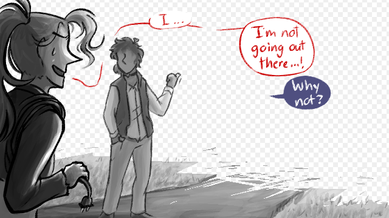

For some reason, we persisted outside the confines of the game.
Kade and Val at the edge of the void. Kade gestures with a thumb into the emptiness; Val, thick cords coiled around her shoulder, is hesitant.
Dialogue in speech bubbles—
Val: “I… I’m not going out there…!”
Kade: “Why not?”
In… spirit, I suppose, if not in setting.
[next features CR, maybe VK in the bg? finally: K yelling at V at the table, all dramatic] [4: crude rudy doodles maybe. crudy. (sibling comix style? or maybe each specific to the installment?) 5+ is fun but maybe later. this whole thing's been spontaneous start to finish]